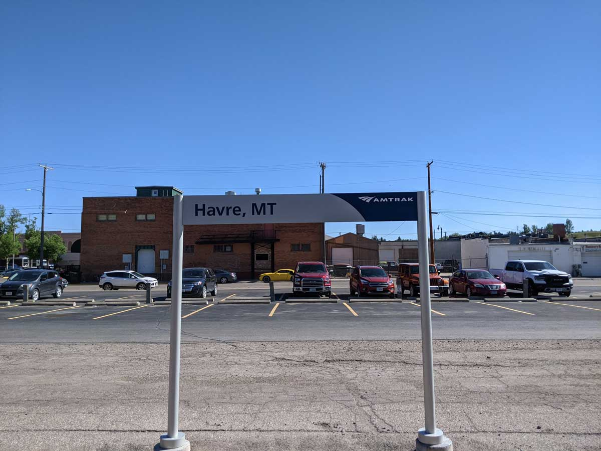
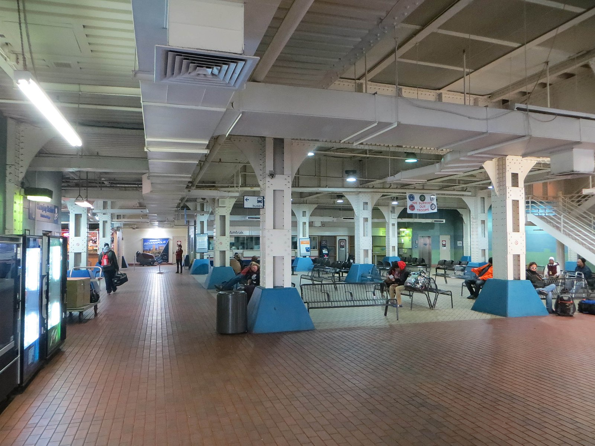
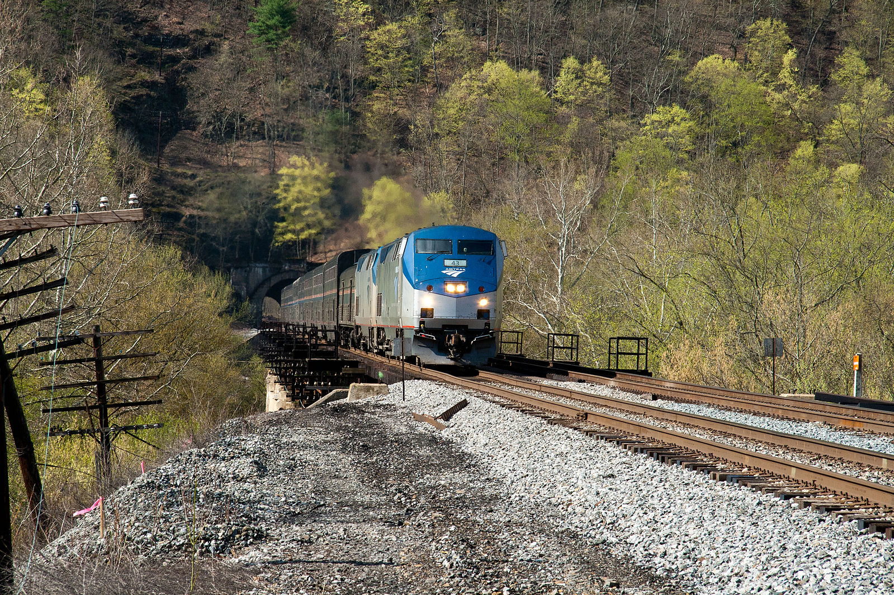

Folks, I’ve traveled more than 100,000 miles on Amtrak and I’ve seen some strange stuff. To celebrate those journeys, and in the spirit of Steve Bull’s seminal “Winter Games From the Dark Side” article in the Country Journal, I’ve developed twelve “events” that Amtrak passengers could participate in. Every one of these events is grounded in personal experience. Note that for any of these events forcible removal from the train by Amtrak staff is grounds for immediate disqualification.
1. Havre Challenge
The Empire Builder makes a daily stop in Havre, Montana. It’s a longish stop; besides a separate refueling, there’s a crew change and restocking from the commissary. The station is located on Main Street, just one block from US-2 and within Havre’s central business district. Enterprising passengers may attempt to patronize those businesses without getting left behind. Points will be awarded for money won in any of the casinos, for drinks consumed at Shamrock’s, or takeout meals presented to the on-board train staff. Any passenger who returns to the train with an ATV purchased at Hi-Line Polaris wins an automatic victory and the ATV will be stored in the baggage car. No points are awarded if the passenger is left behind in Havre. We recommend the Quality Inn, it’s about half a mile down the road.

Many Amtrak passengers in New York arrive in that city by bus from the provinces, and most buses serve the Port Authority Bus Terminal (PABT). Starting from Gate 8 at PABT with $3 and a tin of Altoids in your pocket, proceed to the top of the escalator for platform 9 in the Moynihan Train Hall in New York. You may score a maximum of 15 points, with one point deducted for every minute it takes you after the first five minutes.
3. Smoker’s Paradise
Smoking in all its forms has been outlawed on all Amtrak trains since 2013 when the last smoking lounges came off the Auto Train. In a time frame of at least one hour and not exceeding three hours, smoke five cigarettes while onboard a train. Extra points are awarded for smoking on a single-level regional train or in the baggage car. The trains are equipped with smoke detectors and burly conductors empowered to throw you off the train if they catch you.
4. Sharing With The Class
Amtrak policy forbids consuming alcohol that you brought on board with you unless you (1) have a sleeping compartment and (2) are consuming said alcohol in said sleeping compartment. You will be issued a ticket for a reserved coach seat and a duffel bag with a 12-pack of Coors Lite. You score one point for each beer consumed by a passenger other than yourself. Additional points are awarded if the beers are drunk in view of the on-board staff. If the conductor confiscates your beer you may still score points for those beers already consumed.
5. It Was You Buzzing!
The fluorescent lights at the Amtrak/Greyhound station in Indianapolis haven’t worked correctly for some time and buzz audibly. You will be catching the Cardinal there, with a scheduled departure of midnight. The Cardinal is not renowned for its timekeeping. Arriving at the station at noon with a ticket for the Cardinal, a water bottle, $20 in small bills for the vending machines, and a John Grisham novel, you will receive one point for each consecutive hour you spend in the station without stepping outside. If and when you fail, the Slippery Noodle Inn is one block east on South Street.

6. Buried Treasure
Although a triumph of late 1970s engineering, a notable design flaw in the Superliner I sleeping car is a half-inch gap between the seat and the wall, which leads not to the floor but to a service area with some of the in-room electronics. Three items will be dropped into this gap: a pen, a wristwatch, and a pair of eyeglasses. Using only items found in your luggage and on your person, you will receive five points for each item you retrieve. Points will be deducted for each screw you remove, and you will be disqualified (and probably thrown off the train) if you compromise the function of the car.
7. Unsafe Booking
Amtrak will not book an itinerary with an unsafe connection, such as less than an hour between two long-distance trains in Chicago. You can still book such an itinerary through the website using the multi-city functionality, or just by buying separate tickets. Using your own money, book an “unsafe” connection between two trains. You may score a maximum of 15 points, with one point deducted for every five minutes between the departure and arrival times after the first twenty. No points are awarded if you miss your connection.
8. Capitol Communication
Amtrak offers free WiFi on many of its trains but not on those that operate through remote areas such as the Capitol Limited and the Empire Builder. On some trains you may go hours without a strong cell signal. Using the cell phone and network provider of your choice, remain in contact with a pre-selected third party while aboard the Capitol Limited between Pittsburgh and Harpers Ferry. You will receive one point for every half-hour in which you sent and received a text message from your contact.

Amtrak conductors are, within the narrow confines of their train, extraordinarily powerful people. They come in two main varietals: enormous men, and five-foot-nothing women made entirely of pain. There are many things you can do that will get you thrown off a train and delivered into the arms of local law enforcement. These include, but are not limited to: smoking, public drunkenness, fighting, high-stakes gambling, excessive profanity, and not wearing a mask during the pandemic. You may score a maximum of 15 points, with 3 points for each different offense that does not get you thrown off the train.
10. A Close Shave
Maintaining personal hygiene is an important part of train travel. All passengers have access to bathrooms with sinks. Using nothing more than a Gillette Mach 3 razor, a washcloth, and a travel-size can of shaving cream, remove a three-day beard. A panel of judges will award up to 10 points based on the quality of the shaving job. A point will be deducted for each nick. Additional points may be awarded for shaving in challenging areas, such as on the CSX Water Level Route around Buffalo, or the Savannah yard trackage. The train must be moving.
11. Dining Roulette
Amtrak’s long-distance trains in the Western United States carry dining cars. Dinner is available by reservation. Some meals allow customization. Pre-pandemic, coach passengers could also purchase meals (sleeper passengers get them included in their accommodation charge). As a coach passenger in the Boston section of the westbound Lake Shore Limited, you will receive three points for accomplishing each of the following tasks: (1) making a dinner reservation for before 8:00 PM, (2) actually being seated in the dining car before 8:00 PM, (3) customizing your dinner selection and receiving that customization, and (4) paying your bill less than 20 minutes after the time you finished dessert. An additional three points will be awarded if you complete all four tasks.
12. Where are we? When are we?
You wake up on a long-distance train. A glow on the horizon indicates that local sunrise isn’t far off. Your phone hasn’t connected to a cell tower in hours and you were supposed to cross a time zone boundary during the night. You also don’t know where you stopped last. Using only a paper timetable and pen and paper, and without speaking to anyone else, determine how late your train is. From a maximum of 15 points, deduct 1 for every ten minutes of inaccuracy.